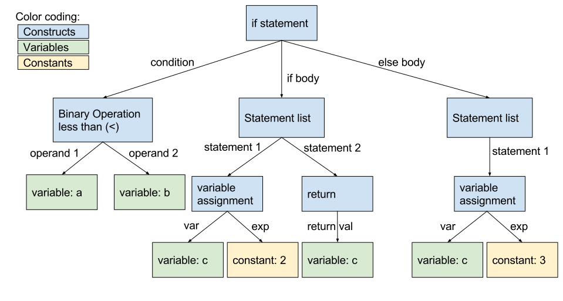
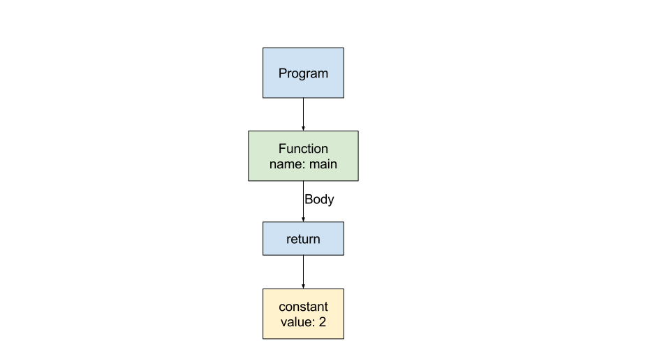

注意：我们不能对负整数进行词法分析。这并不是偶然的--C 语言没有负整数常量。它只是有一个负一元运算符，可以应用于正整数。我们将在下一步添加负一元运算。
语法解析
下一步是将我们的标记列表转化为抽象的语法树（Abstract Syntax Tree，简称AST）。AST是表示程序结构的一种方式。在大多数编程语言中，像条件和函数声明这样的语言结构是由更简单的结构组成的，比如变量和常量。AST捕捉到了这种关系；AST的根将是整个程序，而每个节点将有子节点代表它的组成部分。让我们来看一个小例子。
if (a < b) {
c = 2;
return c;
} else {
c = 3;
}
这段代码是一个if语句，所以我们将AST的根标记为 "if statement"。它有三个子节点：
- 表达式：condition (
a < b) - 语句列表：if body (
c = 2; return c;) - 语句列表：else body (
c = 3;)
这些节点都可以进一步分解。例如，condition (a < b)表达式是一个有两个操作数（operand ）子节点的"<"二元操作的AST节点：
- first operand (variable
a) - second operand (variable
b)
一个赋值语句（如c=2;）也有两个子节点：被更新的变量（c）和赋值给它的表达式（2）。
另一方面，if body是语句列表，它可以有任意数量的子节点--每个语句都是一个子节点。在本例中，它有两个子节点，因为有两条语句。这些子节点是有序的--c=2;排在return c;之前，因为在源代码中就是这样按序排列的。
下面是这段代码的完整AST：

- if statement
- condition: binary operation (<)
- operand 1: variable a
- operand 2: variable b
- if body: statement list
- statement 1: assignment
- variable: c
- right-hand side: constant 2
- statement 2: return
- return value: variable c
- statement 1: assignment
- else body: statement list
- statement 1: assignment
- variable: c
- right-hand side: constant 3
- statement 1: assignment
- condition: binary operation (<)
而这里是构造这个AST的伪代码：
//create if condition
cond = BinaryOp(op='>', operand_1=Var(a), operand_2=Var(b))
//create if body
assign = Assignment(var=Var(c), rhs=Const(2))
return = Return(val=Var(c))
if_body = [assign, return]
//create else body
assign_else = Assignment(var=Var(c), rhs=Const(3))
else_body = [assign_else]
//construct if statement
if = If(condition=cond, body=if_body, else=else_body)
不过现在我们不需要担心条件（conditionals）、变量赋值（variable assignments）或二进制操作符（binary operators）。现在，我们需要支持的AST节点只有程序（programs）、函数声明（function declarations）、语句（statements）和表达式（expressions）。下面是我们对return_2.c给出的AST节点的定义：
program = Program(function_declaration)
function_declaration = Function(string, statement) //string is the function name
statement = Return(exp)
exp = Constant(int)
现在，一个程序由一个函数main组成。在后面的步骤中，我们将把一个程序定义为一个函数列表。一个函数有一个名称（name）和一个函数体（body）。以后，一个函数还会有一个参数列表（list of arguments）。在实际的编译器中，我们还需要存储函数的返回类型（return type），但现在我们只有整数类型。函数体中只包含一条单一的语句（后续会扩展为语句列表）。语句的类型只有一种：返回语句（return statement）。以后我们会增加其他类型的语句，比如条件（conditionals）和变量声明（variable declarations）。一个返回语句有一个子语句，即表达式--这就是被返回的值。现在一个表达式只能是一个整数常量。以后我们会让表达式包含算术运算，这将使我们能够解析像return 2+2;这样的语句。
当我们添加新的语言结构时，我们会更新AST节点的定义。例如，我们最终会添加一种新的语句类型：变量赋值。当我们这样做的时候，我们会在我们的statement定义中添加一个新的形式。
statement = Return(exp) | Assign(variable, exp)
这里是return_2.c的AST图。

最后，我们需要一个形式化的语法，它定义了一系列标记如何组合成语言构造。我们将基于Backus-Naur Form来定义：
<program> ::= <function>
<function> ::= "int" <id> "(" ")" "{" <statement> "}"
<statement> ::= "return" <exp> ";"
<exp> ::= <int>
上面的每一行都是一个产生式（production ），定义了如何从一种形式语言（BNF）的构造和标记来建立另外一个语言（minidecaf）的构造。每一个出现在产生式左侧的符号（即<program>、<function>、<statement>）都是一个非终结符（non-terminal symbol）。个别标记（keywords、id、punctuation等）是终结符（terminal symbols）。请注意，虽然这个语法告诉我们什么样的标记序列构成了一个有效的minidecaf程序，但它*没有告诉我们到底如何将这个程序转化为AST--例如，在AST中没有对应Constant节点的产生式。我们可以重写我们的语法，让常量有一个产生式，但这不是必须的。
现在的语法非常简单，每个非终结符只有一条产生式。在后续试验中，一些非终结符将有多个产生式。例如，如果我们增加了对变量声明的支持，我们就可以有以下的产生式。
<statement> ::= "return" <int> ";" | "int" <id> "=" <int> ";"